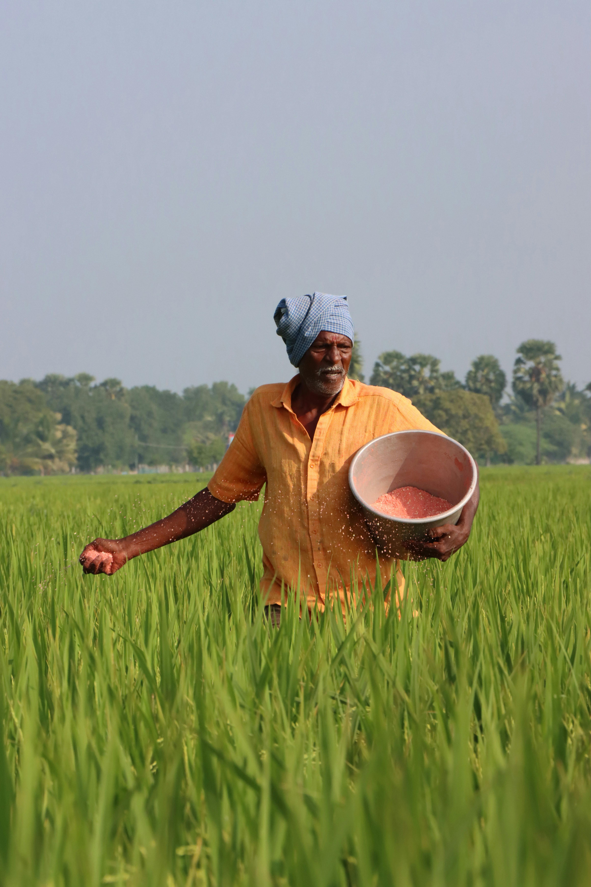
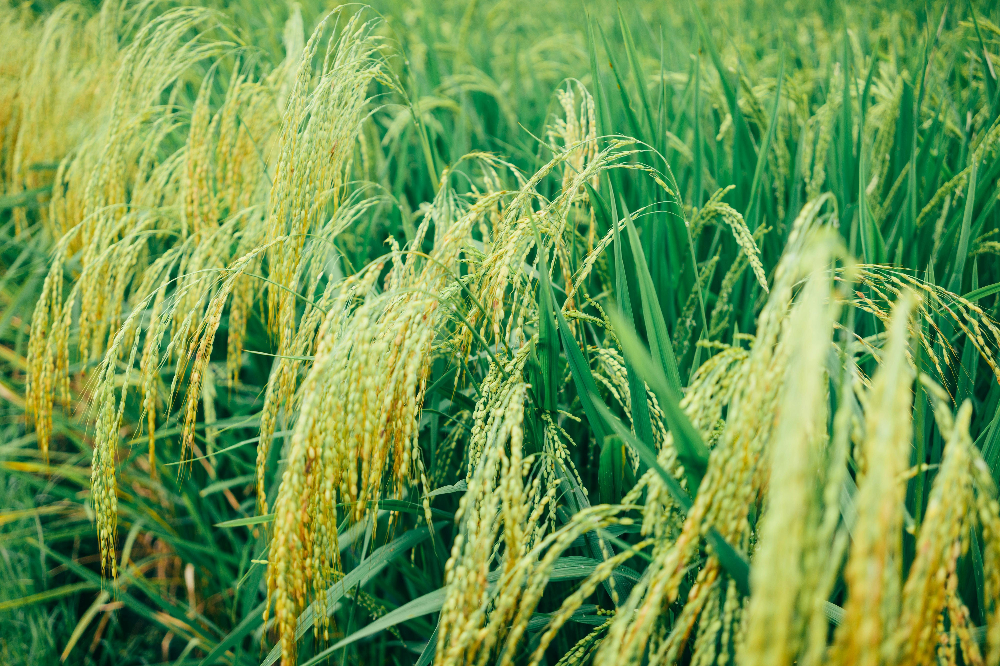

About the Project
Revolutionizing nitrogen management in rice farming through AI
Project Overview
Our research at the University of Sri Jayewardenepura focuses on developing an accurate, handy, and affordable nitrogen management system for smallholder rice farmers using machine learning for leaf color detection. Nitrogen is one of the principal nutrients for rice farming, involved in many functions like the synthesis of chlorophyll, vegetative growth, photosynthesis, and grain production.
Our mobile app uses AI to analyze rice leaves, achieving 98% accuracy in detecting nitrogen levels. It provides instant, tailored fertilizer recommendations, works offline on low-cost smartphones, and helps farmers boost yields while protecting the environment.



Problems & Our Solutions
Problems
- Leaf Color Charts are subjective and error-prone.
- Advanced tools like SPAD meters are too expensive.
- Existing digital methods fail to account for technical variability in real-world conditions.
- Poor nitrogen use harms food security and ecosystems.
Mismanagement of nitrogen fertilizer, either in the form of underapplication or overapplication, has far-reaching consequences on agriculture and the environment. Nitrogen deficiency causes weak plants and reduced yields, while overapplication causes water pollution, greenhouse gas emissions, and high production costs.
Our Solutions
- AI-Powered App: Uses DenseNet121 model for 98% accurate nitrogen detection.
- Accessible: Runs offline on low-end smartphones.
- Practical: Gives real-time fertilizer advice tailored to local conditions.
- Sustainable: Reduces fertilizer waste, cutting costs and pollution.
Project Scope
Target Users: Smallholder rice farmers in Sri Lanka, managing less than two hectares of land, growing common rice varieties.
Technology: A mobile app that analyzes leaf photos from any smartphone camera, delivering nitrogen deficiency results and fertilizer recommendations in seconds.
Future Vision: Built to expand for detecting other nutrient deficiencies, supporting broader crop health solutions.
Research Objectives
Why Our Research Matters
Economic Prosperity
Our app cuts fertilizer use by 15% in field tests, saving farmers money while growing more rice. This means higher profits for smallholder families, putting more cash in their pockets.
Environmental Health
Our app reduces fertilizer runoff by 20% in trials, keeping rivers clean and cutting emissions. This protects water for communities and builds a greener future.
Social Good
Tested with 50 farmers, our affordable app empowers smallholders with smart tools. It also pioneers AI for farming, inspiring solutions worldwide.